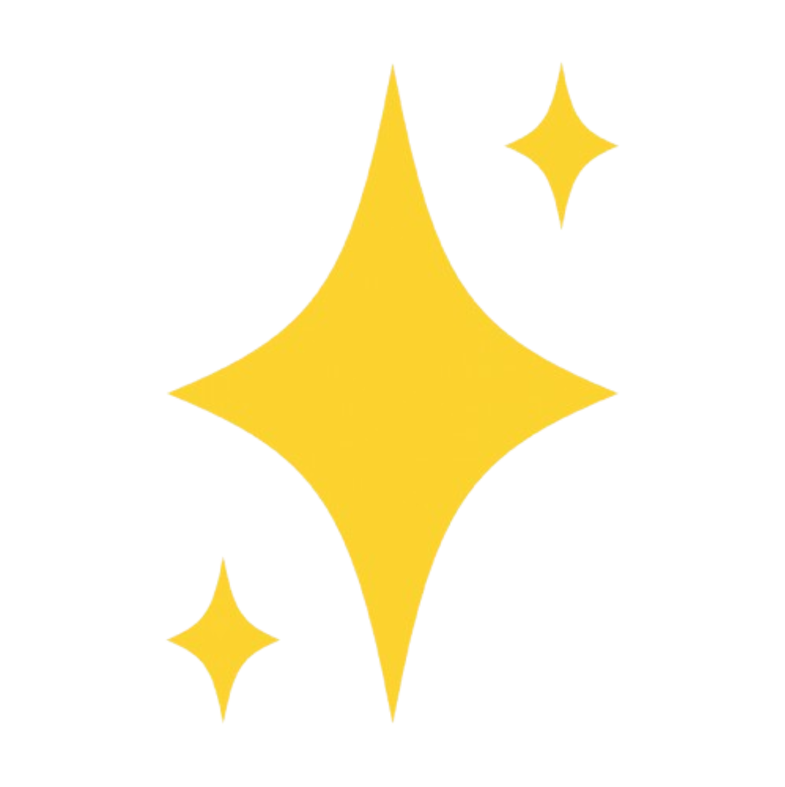
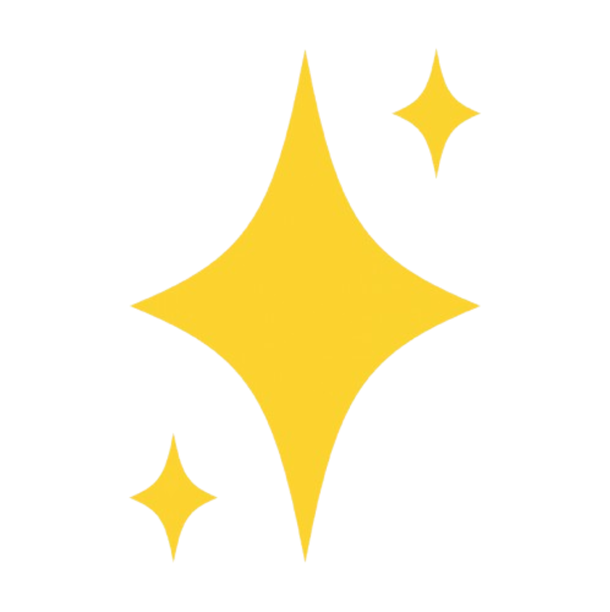

experience ~ %
work experience, research, & clubs!
experience ~ %
cat purdue_ECE_Corporate_Partnerships.txt
I joined Purdue's ECE Corporate Partnerships Program as a Frontend
and Backend Software Engineer! In this role, I help build and
maintain web platforms that support ECE’s industry partnerships
and student engagement initiatives. I work across the stack using
React, JavaScript, and Node.js with Express to create intuitive
user interfaces and scalable backend services backed by REST APIs.
A big part of my role involves collaborating closely with
stakeholders to understand their needs, propose technical
solutions, and iteratively refine features based on feedback. This
role has been a great opportunity to see how thoughtful software
design can directly support real partnerships within the ECE
department.
experience ~ %
cat yottasecure.txt
During my summer internship, I contributed to the full-stack
development of scalable web applications using Java, Python, and
React, while supporting AI-driven cybersecurity projects focused
on vulnerability detection and system hardening. I also maintained
AWS EC2 instances for application deployment and testing, and
participated in testing and quality assurance to identify and
resolve security flaws. This experience was super rewarding, and I
learned a lot about integrating AI solutions into real-world
applications, as well as the importance of feedback and asking for
help when needed.
experience ~ %
cat purdue_stack.txt
I joined Purdue Stack as a full stack developer, where I'm a part
of a team of other developers and designers. We're working on
developing a news feed feature for the Social Stock Exchange (SSE)
mobile app, delivering up-to-the-minute celebrity updates and
trending content. Our goal is to implement personalized feeds,
keyword search, and interactive features like upvotes and comments
to improve user engagement.
experience ~ %
cat video_analytics_lab.txt
I also worked as an undergraduate research assistant in the Video
Analytics Lab for Daily Living Lab at Purdue. Our research focused
on developing and implementing Python-based computer vision models
to classify and track cows from large-scale image and video
datasets directly from Purdue's farms! Our goal was to improve the
accuracy of object and motion detection models, because better
algorithms mean better insights for farmers, and happier cows!
experience ~ %
cat boiler_robotics.txt
As a part of Purdue’s Boiler Robotics Software team, I work on
developing and testing various functions the rover. Currently,
we're implementing computer vision algorithms to analyze
geological samples and programming a robotic arm using with ROS to
handle precise tasks like typing and flipping switches. In the
future, we'll also be working on semi-autonomous rover navigation,
integrating sensors, and real-time data processing. This is my
first experience with robotics, and I’m learning a ton about both
software with hardware systems. Our team is aiming to have the
rover fully functional by spring 2026 to participate in the
University Rover Challenge (URC).


 
